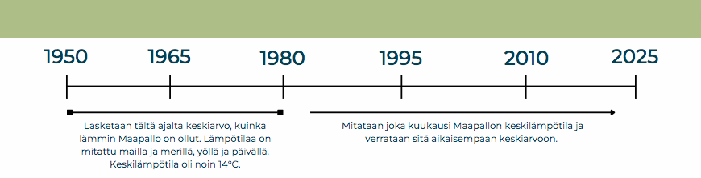

ESIMERKKI 1: Maan lämpötilapoikkeaman määritys#
Tervetuloa testailemaan Jupyter Notebookia. Tähän yhteen tiedostoon (eli notebookiin) on rakennettu yksi esimerkkiharjoitus. Tämä alusta on täysin interaktiivinen, joten voit siis vapaasti muokkailla kaikkea täältä löytyvää – eikä huolta, muutokset eivät näy kavereille!
Nämä tiedostot rakentuvat koodisoluista sekä tekstisoluista. Yläpalkista löytyy tarvittavat työkalut, kuten:
solujen lisääminen ja poistaminen
solujen liikuttelu ylös ja alas
solujen ajaminen (Run)
ja solun tyypin määrittäminen (markdown = tekstisolu, code = koodisolu).
Jos tykkäät käyttää enemmän pikakomentoja, solujen ajamiseen toimii Ctrl+Enter (Windows) tai cmd+Enter (Mac).
Miten maapallon lämpötila on muuttunut vuosien saatossa?#
Tarkastellaan kuinka Maapallon lämpötila on muuttunut viimeisen 140 vuoden aikana. Yksi keino lähestyä tätä asiaa on lämpötilapoikkeamat (temperature anomalies).
Lämpötilapoikkeamalla voidaan tarkastella sitä, miten lämpötila on muuttunut johonkin vertailuajankohtaan nähden. Absoluuttisia arvoja ei siis tiedetä, mutta tiedetään muutoksen suuruus.
Tässä tapauksessa vertailuajankohtana toimii vuodet 1951 - 1980. Näiden vuosien globaaleista lämpötilakeskiarvoista on laskettu keskiarvo, joka toimii meidän vertailuarvona. Tämän jälkeen vuodesta 1980 lähtien jokaisen kuukauden globaalia lämpötilakeskiarvoa tuohon vertailuarvoon. Tästä nähdään siis suoraan, kuinka paljon lämpötila on muuttunut vertailuajankohdan jälkeen.

Datasetin käyttöönotto ja valmistelu#
# Datasettien tarkasteluun tarvitaan erilaisia työkaluja, osaa tarvitaan taulukoiden kanssa työskentelyyn ja osaa
# kuvaajien rakentamiseen. Työkalut löytyy työkalukirjastoista, ja ladataan nyt tarvittavat kirjastot käyttöön.
import pandas as pd # pandas sisältää työkalut taulukoita varten
import matplotlib.pyplot as plt # ja matplotlib vastaavasti kuvaajia varten
Nyt tarvitaan jotain dataa, jotta voidaan edetä tässä tarkastelussa. Otetaan käyttöön datasetti, joka on löydetty täältä. Ladataan tiedosto tänne ja kurkataan sen sisältö.
# lampotilat_data on nyt muuttuja, johon me tallennetaan koko datasetin sisältö sellaisenaan.
lampotilat_data = pd.read_csv('https://raw.githubusercontent.com/opendata-education/Tyopajat/main/materiaali/data/climate-change.csv') # Luetaan tiedosto ja tallennetaan se muuttujaan.
lampotilat_data.head() # head()-käskyllä voidaan kurkata datasetin sisälle.
| Entity | Date | Combined measurements | Seasonal variation | Monthly averaged | Annual averaged | monthly_sea_surface_temperature_anomaly | Sea surface temp (lower-bound) | Sea surface temp (upper-bound) | Monthly pH measurement | Annual average | Temperature anomaly | Church & White | University of Hawaii | Average | arctic_sea_ice_osisaf | Monthly averaged.1 | Annual averaged.1 | Monthly averaged.2 | Annual averaged.2 | |
|---|---|---|---|---|---|---|---|---|---|---|---|---|---|---|---|---|---|---|---|---|
| 0 | Antarctica | 1992-01-01 | NaN | 418.310350 | NaN | NaN | NaN | NaN | NaN | NaN | NaN | NaN | NaN | NaN | NaN | NaN | NaN | NaN | NaN | NaN |
| 1 | Antarctica | 1992-01-31 | NaN | 425.377021 | NaN | NaN | NaN | NaN | NaN | NaN | NaN | NaN | NaN | NaN | NaN | NaN | NaN | NaN | NaN | NaN |
| 2 | Antarctica | 1992-03-01 | NaN | 433.552016 | NaN | NaN | NaN | NaN | NaN | NaN | NaN | NaN | NaN | NaN | NaN | NaN | NaN | NaN | NaN | NaN |
| 3 | Antarctica | 1992-04-01 | NaN | 424.496837 | NaN | NaN | NaN | NaN | NaN | NaN | NaN | NaN | NaN | NaN | NaN | NaN | NaN | NaN | NaN | NaN |
| 4 | Antarctica | 1992-05-01 | NaN | 423.362721 | NaN | NaN | NaN | NaN | NaN | NaN | NaN | NaN | NaN | NaN | NaN | NaN | NaN | NaN | NaN | NaN |
head()-komennon sulkujen sisälle voi laittaa lukuarvoja, jolla voidaan vaikuttaa siihen, mitä datasetistä näytetään tässä esikatselussa. Kokeile laittaa sinne vaikka luvut 10 ja -20.
Datasetti näyttää sisältävän mittaustuloksia useista eri paikoista. Listan lopussa on myös globaalit arvot, joten keskitytään nyt niihin.
# Tallennetaan lampotilat-muuttujaan datasetin globaalit arvot, eli ne rivit,
# joissa Entity-sarakkeessa lukee 'World'.
lampotilat = lampotilat_data[(lampotilat_data['Entity']=='World')]
Voit tarkistaa head()-komennon avulla, miltä tiedot näyttävät nyt. Minkälaisen komennon voit kirjoittaa yllä olevaan koodisoluun?
Tämä datasetti sisältää kuitenkin varsin paljon NaN-arvoja (NaN = Not a Number). Koska me ollaan nyt kiinnostuneita lämpötilapoikkeamista ja niille arvoille löytyy oma sarakkeensa (Temperature anomaly), poistetaan ne rivit, joissa kyseisen sarakkeen arvo on NaN.
lampotilat = lampotilat.dropna(subset=['Temperature anomaly']) # Poistetaan NaN-rivit
lampotilat['Date'] = pd.to_datetime(lampotilat['Date']) # Muutetaan Date-sarakkeen luvut oikeasti päivämääriksi.
Kuvaajan piirtäminen#
Nyt ollaan tehty varsinaiset valmistelut datasetin osalta valmiiksi, ja päästäänkin pyörittelemään itse dataa. Valmistellaan seuraavaksi x-akselille ja y-akselille tulevat tiedot omiin muuttujiin, niin homma pysyy selkeänä. Nyt halutaan päivämäärät x-akselille ja lämpötilapoikkeamat y-akselille.
paivamaarat = lampotilat['Date'] # tallennetaan päivämäärätiedot
data = lampotilat['Temperature anomaly'] # tallennetaan lämpötilapoikkeamat
Plottailua varten kaikki valmiina, joten lähetään piirtelemään.
plt.figure(figsize = (20, 10)) # Määritetään kuvaajan koko. Voit vaihtaa numeroita sulkeiden sisällä.
plt.plot(paivamaarat, data) # Annetaan piirrettävät tiedot plot(x,y)-komennolla.
plt.title('Kuva 1: Globaali kuukausittainen lämpötilapoikkeama vuosien 1951-1980 keskiarvoon verrattuna.')
plt.xlabel('Vuosi')
plt.ylabel('Poikkeama [°C]')
plt.axhline(0, color='yellow') # Selkeyden vuoksi piirretään viiva kohtaan y=0.
plt.show() # Tulostetaan kuvaaja näkyviin.
Pohdinta#
Vaihtakaa vieruskaverisi kanssa ajatuksia tästä kuvaajasta ja harjoituksesta. Voitte käydä läpi esimerkiksi seuraavia kysymyksiä:
Minkälaisia ajatuksia kuvaaja tai tämä harjoitus herättää sinussa?
Minkälaisia sanoja käyttäisit tästä kuvaajasta? Onko se herättelevä, tylsä, informatiivinen, selkeä, harhaanjohtava, vai jotain muuta?
Onko lämpötilapoikkeama sinun mielestäsi hyvä tapa tuoda esille ilmastonmuutosta?
Jääkö tästä kuvaajasta tai harjoituksesta puuttumaan jotakin, mikä olisi sinun mielestäsi kiinnostavaa?